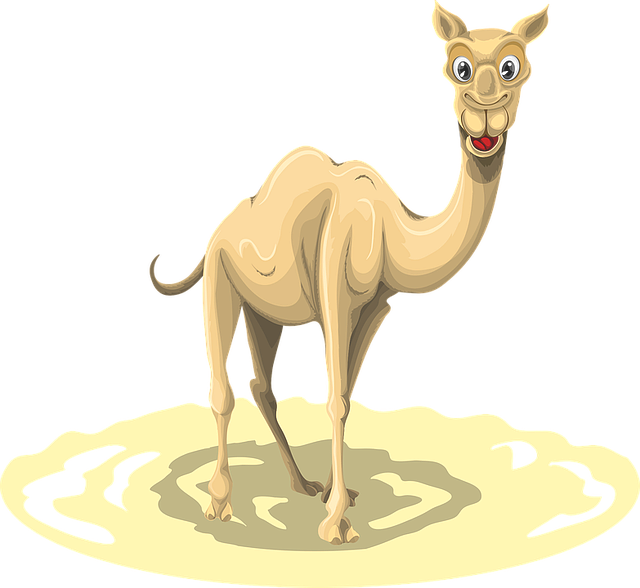

Atogrąžų dykumų geografinė zona

Atogrąžų klimato juosta yra tarp subtropinės ir subekvatorinės juostų. Būdingos aukštos temperatūros (vidutinė metinė aukštesnė nei 18 °C), aukštas slėgis, mažas kritulių kiekis. Vasaros itin karštos (virš 40 °C), žiemos vėsios (pasitaiko neigiamų temperatūrų). Augalija labai skurdi, vyrauja dykumos.